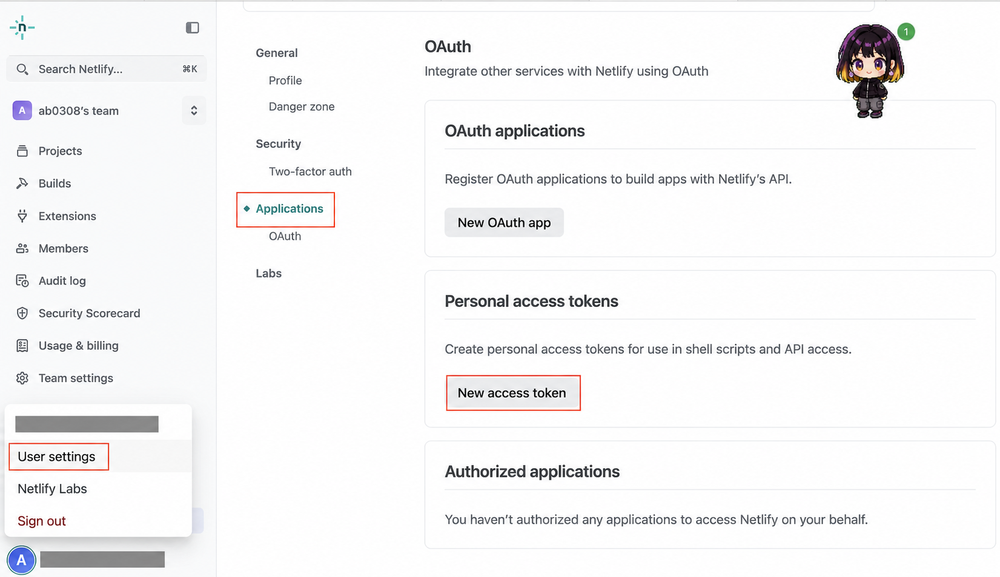

ChatGPT AI Agent Part 4
從一句需求開始，完成可玩、可驗收、可分享的網頁遊戲
新北市大豐國小 · 許凱琳老師
MISSION
用 Codex 建立網頁遊戲，在自己的電腦與手機上實際試玩。
連接 Netlify MCP，先建立預覽版，驗收後才正式上架。
GAME SPEC
WORKSPACE
click-game 資料夾。PROMPT ①
請在這個資料夾製作 30 秒限時點擊網頁遊戲。先盤點資料夾並列出計畫，再開始製作。要有開始、倒數、隨機移動的目標、分數、結果與重新開始；支援電腦與手機。完成後實際開啟檢查，告訴我如何試玩。
VERIFY
倒數會停在 0；每次點擊只加 1 分；結束後不再計分。
目標不會跑出邊界；手機上也能點；按鈕與文字清楚。
再玩一次時，分數、時間與目標狀態會正確重置。
沒有要求個資、密碼或不必要的網路權限。
PROMPT ②
保留現有玩法與功能，把遊戲改成「＿＿＿」主題。請改善配色、標題、目標造型、按鈕回饋與結束畫面，並檢查手機版。不要改變 30 秒與計分規則。
NETLIFY
MCP SETUP
codex mcp add netlify --url https://netlify-mcp.netlify.app/mcp請使用 Netlify MCP 執行 get-user 測試，只回報帳號連線狀態，不要部署。SECURITY

DEPLOY PREVIEW
請使用 Netlify MCP 把目前的限時點擊遊戲建立為預覽部署。先檢查要發布的資料夾與檔案，不要改成正式部署。完成後提供預覽網址與驗收項目。
PRODUCTION
.netlify.app 分享網址。UPDATE
AGENT · SKILL
已經驗證過、之後會重複使用，而且有清楚輸入、步驟與驗收方式的流程。
將「檢查網頁遊戲 → 建立 Netlify 預覽 → 回報驗收清單」做成重複流程。
AGENT · PROJECT RULES
AGENTS.md 是有特定用途的 Markdown 檔；不是 Agent 寫的每一個 .md 檔都叫 AGENTS.md。AGENT · HANDOFF
請把目前專案整理成 handoff.md，包含專案目標、已完成功能、重要檔案、已做過的測試、Netlify 部署狀態、尚未解決的問題與建議下一步。不要修改遊戲內容，不要寫入 Token 或密碼。
AGENTS.md 與 handoff.md，盤點現況，再提出接續計畫。遊戲上線 🎉
說清楚 → 做出來 → 自己玩 → 預覽驗收 → 正式分享
Skill 保存重複流程，AGENTS.md 保存長期規則，handoff.md 保存本次進度。